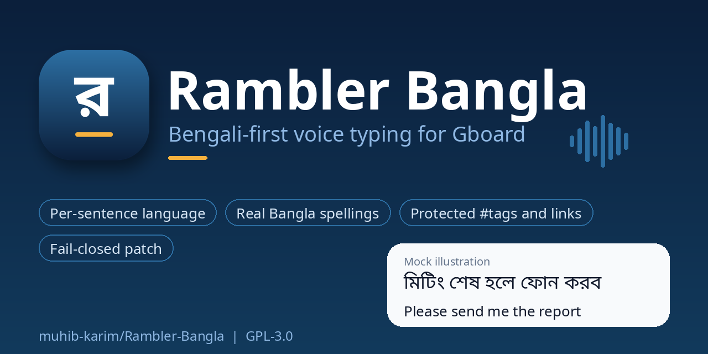
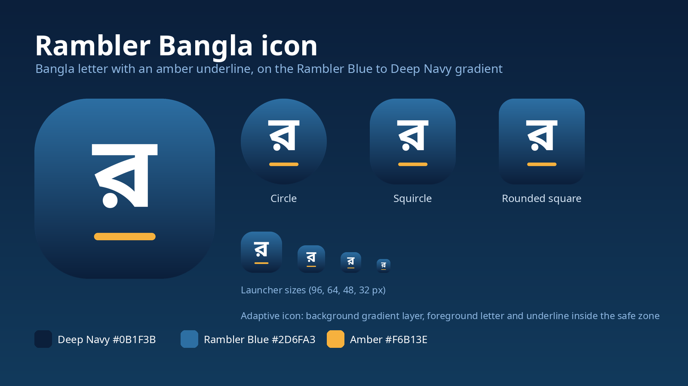

Rambler Bangla is an open-source patch layer that keeps Gboard's voice cleanup from turning Bengali into Latin letters, and handles mixed Bangla and English one sentence at a time.
View on GitHub Release notesWhat the project does today, with the evidence level stated for each.
Dictate Bangla, English or both on the multilingual layout. Each sentence is written fully in Bangla script or fully in English, so output is not a jumble of both.
English words spoken inside Bangla come out as Bangla spellings (কোম্পানি, টেলিভিশন, বার্লিন). Built from the CMU Pronouncing Dictionary plus reviewed overrides. Transliteration only, never translation.
#hashtags, @handles, links, emails and times stay in Latin letters on every voice path.
The patcher proves it is looking at the exact Gboard 18.3.1 build it expects. A single mismatch means no output at all. 17 end-to-end checks and 51 policy assertions run on every push.
On by default. Turn it off and you get Gboard's own output unchanged, which is handy for telling whether an odd result comes from Rambler or from Gboard.
Off by default. Turn it on only to report a problem. The log stays on your phone and you read it before sharing.
Long-press a clipboard item and drag it to reorder. Listed in the V29.3 notes, still being smoothed out.
The test build uses its own package identity and installs next to the stock keyboard. Updates signed with the same key install over the top.
Design intent for the V29.3 test build.
| Layout | Result |
|---|---|
| English (US) | English only. Rambler changes nothing. |
| বাংলা (native) | Bangla only. Romanized Bangla and English words become Bangla script. |
| abc → বাংলা | Multilingual. Each sentence is Bangla script or English, decided per sentence. |
| Bangla (Latin) | Treated as Bangla: output is Bangla script. |
The patcher never edits bytes by offset. It disassembles the APK, checks SHA-256 string fingerprints, confirms method anchors, finds the enabled-languages register by dataflow, and only then inserts two hook calls. If any check fails it exits with status 2 and writes nothing.
The repository holds the source, fingerprint profile, rename tooling, tests and audit records. It contains no Google binaries, keys or model files.
The Bangla letter র with an amber underline on a Rambler Blue to Deep Navy gradient. Colours: Deep Navy #0B1F3B, Rambler Blue #2D6FA3, Amber #F6B13E.

October 2026 test builds, with the evidence level for each claim.
| Item | Level |
|---|---|
| Updates signed with the same key install over the existing app | Confirmed on the maintainer's phone |
| Gboard AI writing-tools icon visible again on build 253 | Confirmed on the maintainer's phone; cause not proven |
| Build 253 compatibility update (stale ids retargeted, no behaviour flags changed) | Two static reviews passed, no runtime proof |
| Stray "123" labels suppressed on pinned and list items | Static review only |
| Clipboard recents setting, masking default off | Static review only |
| Clause segmentation, phonetic typing with EN/BN toggle, Bangla (Latin) | Planned, not working yet |
Latest tagged release: v29.3. Per-version build records are in the ledger; known limits are listed in the release notes.
Bangla is not on Google's official list of languages for cloud rewrite, so Rambler Bangla only improves the on-device path. It does not add Bangla to Google's cloud service.